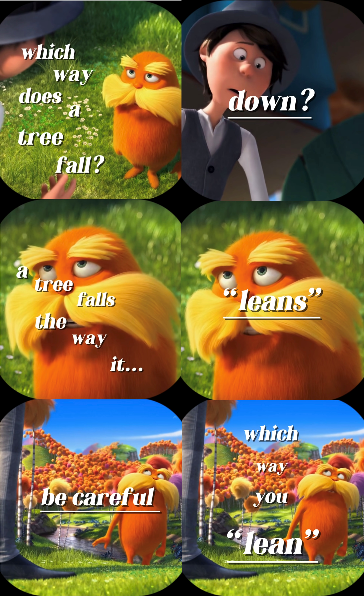

Phase 1.
Like a lobster that has outgrown its shell, this phase is fueled by the urge to grow. The growth is directed and deliberate—absorbing knowledge deemed useful, and rejecting those that are not.
From pursuing side projects, learning to code, reading self-development books, and weightlifting… anything related to positive growth. I’m a thinker by nature. This website is a product of that desire to grow and a creative outlet to funnel people in and let them know about me.
Phase 2.
The stars aligned and the longing for a greater purpose was given an answer. The period of cultivation had passed, giving way to reaping the fruits of the lessons and skills acquired from the Growth phase.
This period is marked by the newfound drive to quench an old ambition that had always remained close to the heart. In hindsight, it was one of the most defining phases of my life, bringing new meanings, purposes, and journeys.
Phase 3.
Everything is subject to change and end. The people I work with and the goals set forth. The energy shifted, and a subtle nudge demanded attention. It had always been there, merely numbed by the hectic drive.
So I started defining the longing. As it became clearer, the next phase began to load...
Phase 4.
As the search went on, the vision became more apparent. A new horizon presented itself before me, bringing new challenges, potential opportunities, and a future I could envision.
This yearning is different from the Growth phase where it came from a place of desperation, but rather from a place of giddiness. As new challenges and journeys await, the optimism continues to grow.
Go down the rabbit hole...
